Code
from fastai.vision.all import *
from fastcore.all import *
from PIL import Image, ImageOps
set_seed(42, reproducible=True)That is the question I asked myself recently. I ’ve been working on a recipe digitization app, aka the recipe scanner app.
The idea is simple: take snapshots of your favourite recipes from books or magazines. Then a pipeline guides you through the digitization with as little manual effort as possible.
This pipeline relies on several API calls: OCR for text extraction LLM inference. OCR calls are billed per request and LLMs per token.
The pipeline should automatically skip those expensive stages whenever possible.
Here are two example pages:

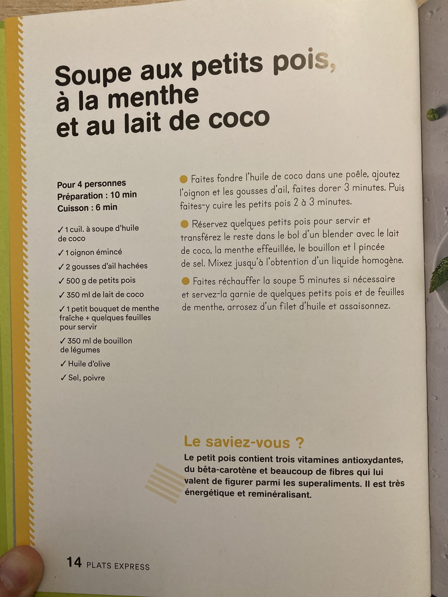
I started with purely computer vision-based methods, based on structure, color simplicity, and edge density. However, on my small test dataset of six images, I did not get a 100% working solution.
I then reverted to a more complex solution, using a OCR. Even with a local tool like Pytesseract, the results are very good. If more than 50 words are detected, that’s a text page.
The solution works but is slow as OCR favors high resolution images.
In this notebook I will try to deliver a CNN-based classifier that should run quicker while still achieving high accuracy.
I trained a first model based on existing scans I had available. Due to copyright restrictions, the dataset is not public.
For the future, each user could build their own dataset. The initial samples can be selected by the OCR pipeline or the user clicking. Then a classifier is trained. Once it is accurate enough, we switch the pipeline to the quicker CNN classifier.
from fastai.vision.all import *
from fastcore.all import *
from PIL import Image, ImageOps
set_seed(42, reproducible=True)Before we dive into different options for modeling, we will do a quick pass through the data and see which images do not fit well. The data has two categories image_page or text_page. The dataset is balanced with 330 image pages to 355 text pages. We will therefore stick to accuracy as metric.
We use 20 % validation data. The images are too big for the net. Therefore, we resize to 192 px. We pad to preserve aspect ratio. Rotations are dealt with on loading.
For the first pass we choose resnet18.
def correct_exif_orientation(fn):
img = Image.open(fn)
return ImageOps.exif_transpose(img)
pages = DataBlock(
blocks=(ImageBlock, CategoryBlock),
get_items=get_image_files,
splitter=RandomSplitter(valid_pct=0.2, seed=42),
get_y=parent_label,
get_x=correct_exif_orientation,
item_tfms=[Resize(192,method='pad', pad_mode='zeros')]
)Let’s load our data and inspect.
dls = pages.dataloaders("data/raw/")
dls.show_batch()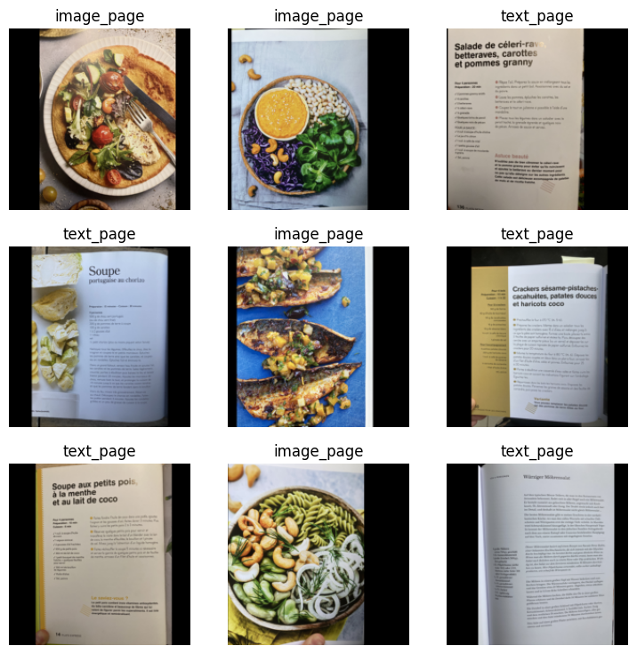
We define a learner and fine-tune.
set_seed(42, reproducible=True)
learn = vision_learner(dls, resnet18, metrics=accuracy)learn.fine_tune(3)| epoch | train_loss | valid_loss | accuracy | time |
|---|---|---|---|---|
| 0 | 0.682892 | 0.014835 | 0.992754 | 00:27 |
| epoch | train_loss | valid_loss | accuracy | time |
|---|---|---|---|---|
| 0 | 0.063574 | 0.009595 | 0.992754 | 00:26 |
| 1 | 0.044590 | 0.019105 | 0.985507 | 00:28 |
| 2 | 0.031911 | 0.012100 | 0.985507 | 00:28 |
After three iterations we already have 100% accuracy. There is certainly something wrong with our training approach.
I use random splitter, which means that there are no unknown formats in the validation set. The algorithm will just have memorized the formats of the books in the training data. In addition, it overfitted during the first run.
We will reserve one format for the validation set. Starting from imageIMG_0552 only images of this new format exist. We will use this information for the splitter.
from sklearn.model_selection import GroupShuffleSplit
import pandas as pd
items = get_image_files("data/raw/")
def get_source(fn):
num = int(fn.stem.split("_")[1])
return "A" if num <= 552 else "B"
df = pd.DataFrame({"fn": items})
df["source"] = df["fn"].map(get_source)
gss = GroupShuffleSplit(test_size=0.2, random_state=42)
train_idx, valid_idx = next(gss.split(df, groups=df["source"]))
format_splitter = IndexSplitter(valid_idx)pages = DataBlock(
blocks=(ImageBlock, CategoryBlock),
get_items=get_image_files,
splitter=format_splitter,
get_y=parent_label,
get_x=correct_exif_orientation,
item_tfms=[Resize(192, method='pad', pad_mode='zeros')]
)
dls = pages.dataloaders("data/raw/")And run training again
set_seed(42, reproducible=True)
learn = vision_learner(dls, resnet18, metrics=accuracy)
learn.fine_tune(3)| epoch | train_loss | valid_loss | accuracy | time |
|---|---|---|---|---|
| 0 | 0.643476 | 0.222453 | 0.946341 | 00:28 |
| epoch | train_loss | valid_loss | accuracy | time |
|---|---|---|---|---|
| 0 | 0.021866 | 0.284040 | 0.946341 | 00:29 |
| 1 | 0.012767 | 0.209461 | 0.946341 | 00:28 |
| 2 | 0.008253 | 0.213438 | 0.941463 | 00:29 |
Let’s look at the poorest performers
interp = ClassificationInterpretation.from_learner(learn)interp.plot_top_losses(10)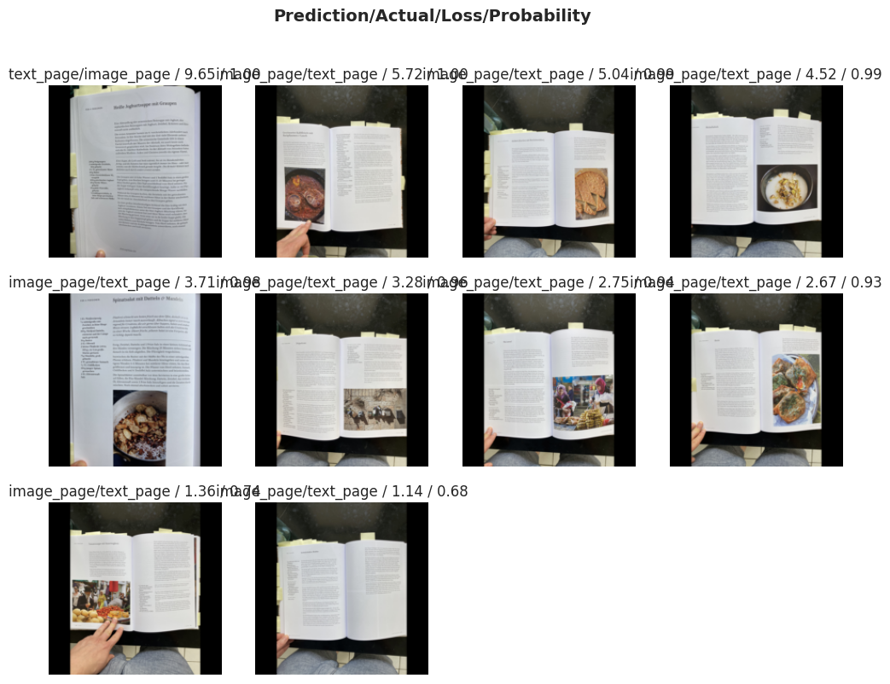
As expected, most of the top losses come from the new category in the validation set: text with big picture. Let’s try cropping instead of padding.
pages_crop = DataBlock(
blocks=(ImageBlock, CategoryBlock),
get_items=get_image_files,
splitter=format_splitter,
get_y=parent_label,
get_x=correct_exif_orientation,
item_tfms=RandomResizedCrop(192, min_scale=0.3))
dls_crop = pages.dataloaders("data/raw/")set_seed(42, reproducible=True)
learn = vision_learner(dls_crop, resnet18, metrics=accuracy)
learn.fine_tune(3)| epoch | train_loss | valid_loss | accuracy | time |
|---|---|---|---|---|
| 0 | 0.572427 | 0.259774 | 0.936585 | 00:28 |
| epoch | train_loss | valid_loss | accuracy | time |
|---|---|---|---|---|
| 0 | 0.038109 | 0.242050 | 0.941463 | 00:30 |
| 1 | 0.037208 | 0.183234 | 0.956098 | 00:31 |
| 2 | 0.025155 | 0.147071 | 0.956098 | 00:30 |
Interestingly the results are slightly better. But during testing I saw the inverse when using other seeds. To remain consistent we switch to cropping.
Now with the basics settled, let’s try to improve further our 95.6% accuracy.
We start by tuning the the learning rate. In addition to using the learning rate finder, we increase the duration where we only train the head, as the dataset is small.
set_seed(42, reproducible=True)
learn = vision_learner(dls, resnet18, metrics=accuracy)learn.lr_find(suggest_funcs=(minimum, steep, valley))SuggestedLRs(minimum=0.05248074531555176, steep=0.00019054606673307717, valley=0.0006918309954926372)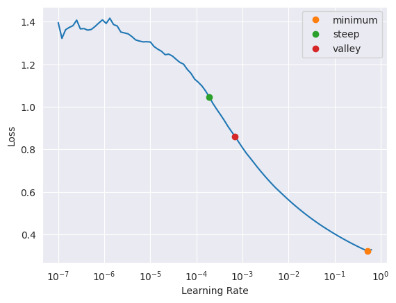
learn.fine_tune(
20,
base_lr=6.9e-4,
freeze_epochs=5 # train the head
)| epoch | train_loss | valid_loss | accuracy | time |
|---|---|---|---|---|
| 0 | 1.063496 | 0.927946 | 0.512195 | 00:32 |
| 1 | 0.779015 | 0.373030 | 0.882927 | 00:33 |
| 2 | 0.518703 | 0.255721 | 0.921951 | 00:32 |
| 3 | 0.373917 | 0.246510 | 0.941463 | 00:34 |
| 4 | 0.279082 | 0.242445 | 0.941463 | 00:32 |
| epoch | train_loss | valid_loss | accuracy | time |
|---|---|---|---|---|
| 0 | 0.018540 | 0.215797 | 0.941463 | 00:35 |
| 1 | 0.016864 | 0.187548 | 0.951219 | 00:37 |
| 2 | 0.012505 | 0.173968 | 0.956098 | 00:35 |
| 3 | 0.009071 | 0.161985 | 0.960976 | 00:35 |
| 4 | 0.006918 | 0.166117 | 0.956098 | 00:32 |
| 5 | 0.005747 | 0.176520 | 0.956098 | 00:33 |
| 6 | 0.004610 | 0.178823 | 0.956098 | 00:35 |
| 7 | 0.004979 | 0.168676 | 0.960976 | 00:36 |
| 8 | 0.004130 | 0.163851 | 0.960976 | 00:36 |
| 9 | 0.003458 | 0.168914 | 0.965854 | 00:35 |
| 10 | 0.002940 | 0.190041 | 0.956098 | 00:37 |
| 11 | 0.002547 | 0.178129 | 0.956098 | 00:37 |
| 12 | 0.002212 | 0.184677 | 0.956098 | 00:36 |
| 13 | 0.002100 | 0.182207 | 0.960976 | 00:34 |
| 14 | 0.001811 | 0.182882 | 0.956098 | 00:32 |
| 15 | 0.001629 | 0.184585 | 0.956098 | 00:30 |
| 16 | 0.001452 | 0.182009 | 0.956098 | 00:31 |
| 17 | 0.001260 | 0.187534 | 0.956098 | 00:31 |
| 18 | 0.001156 | 0.192596 | 0.956098 | 00:32 |
| 19 | 0.001018 | 0.186388 | 0.956098 | 00:31 |
We managed a higher accuarcy of 96.5%, but training training diverged.
The text could be too blured at 192px. We increase image size to 320px and follow the same approach as before. To avoid unnecessary calls, when the training is overfitting I added the callbacks.
set_seed(42, reproducible=True)
pages = DataBlock(
blocks=(ImageBlock, CategoryBlock),
get_items=get_image_files,
splitter=format_splitter,
get_y=parent_label,
get_x=correct_exif_orientation,
item_tfms=[RandomResizedCrop(320, min_scale=0.3)]
)
dls = pages.dataloaders("data/raw/")learn = vision_learner(dls, resnet18, metrics=accuracy)learn.lr_find(suggest_funcs=(minimum, steep, valley))SuggestedLRs(minimum=0.05248074531555176, steep=0.0002290867705596611, valley=0.0014454397605732083)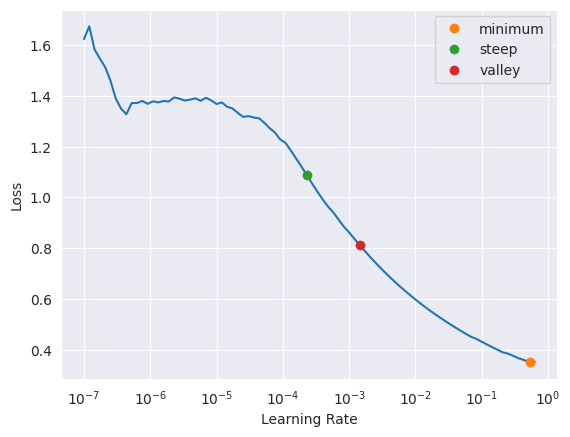
learn.fine_tune(
20,
base_lr=1.4e-3,
freeze_epochs=5, # train the head
cbs=[
EarlyStoppingCallback(monitor='valid_loss', patience=3),
SaveModelCallback(monitor='valid_loss') # saves best model
]
)| epoch | train_loss | valid_loss | accuracy | time |
|---|---|---|---|---|
| 0 | 1.024766 | 0.579390 | 0.775610 | 00:24 |
| 1 | 0.583699 | 0.165269 | 0.946341 | 00:24 |
| 2 | 0.370840 | 0.201217 | 0.956098 | 00:24 |
| 3 | 0.263847 | 0.208855 | 0.956098 | 00:23 |
| 4 | 0.198083 | 0.187529 | 0.960976 | 00:23 |
Better model found at epoch 0 with valid_loss value: 0.5793901085853577.
Better model found at epoch 1 with valid_loss value: 0.16526909172534943.
No improvement since epoch 1: early stopping| epoch | train_loss | valid_loss | accuracy | time |
|---|---|---|---|---|
| 0 | 0.037425 | 0.131343 | 0.960976 | 00:23 |
| 1 | 0.034193 | 0.105369 | 0.965854 | 00:23 |
| 2 | 0.023509 | 0.091661 | 0.975610 | 00:24 |
| 3 | 0.016545 | 0.084221 | 0.975610 | 00:24 |
| 4 | 0.012769 | 0.091403 | 0.975610 | 00:23 |
| 5 | 0.010076 | 0.113227 | 0.970732 | 00:23 |
| 6 | 0.008031 | 0.133027 | 0.960976 | 00:23 |
Better model found at epoch 0 with valid_loss value: 0.13134345412254333.
Better model found at epoch 1 with valid_loss value: 0.10536907613277435.
Better model found at epoch 2 with valid_loss value: 0.09166132658720016.
Better model found at epoch 3 with valid_loss value: 0.08422137051820755.
No improvement since epoch 3: early stoppingWe made it to 97.5%.
As a last step we try introducing data augmentation. Same procedure as before.
set_seed(42, reproducible=True)
pages = DataBlock(
blocks=(ImageBlock, CategoryBlock),
get_items=get_image_files,
splitter=format_splitter,
get_x=correct_exif_orientation,
get_y=parent_label,
item_tfms=[RandomResizedCrop(320, min_scale=0.3)],
batch_tfms=aug_transforms(2),)
dls = pages.dataloaders("data/raw/")learn = vision_learner(dls, resnet18, metrics=accuracy)
learn.lr_find(suggest_funcs=(minimum, steep, valley))SuggestedLRs(minimum=0.03630780577659607, steep=0.00019054606673307717, valley=0.0010000000474974513)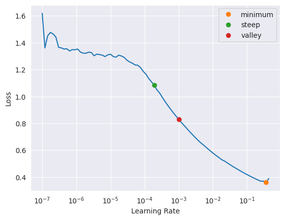
learn.fine_tune(
20,
base_lr=1e-3,
freeze_epochs=5, # train the head
cbs=[
EarlyStoppingCallback(monitor='valid_loss', patience=3),
SaveModelCallback(monitor='valid_loss') # saves best model
]
)| epoch | train_loss | valid_loss | accuracy | time |
|---|---|---|---|---|
| 0 | 1.149485 | 0.779582 | 0.668293 | 00:23 |
| 1 | 0.707324 | 0.202957 | 0.921951 | 00:22 |
| 2 | 0.463376 | 0.184458 | 0.960976 | 00:21 |
| 3 | 0.335166 | 0.195367 | 0.960976 | 00:21 |
| 4 | 0.252198 | 0.193939 | 0.960976 | 00:21 |
Better model found at epoch 0 with valid_loss value: 0.7795820832252502.
Better model found at epoch 1 with valid_loss value: 0.20295678079128265.
Better model found at epoch 2 with valid_loss value: 0.18445810675621033.| epoch | train_loss | valid_loss | accuracy | time |
|---|---|---|---|---|
| 0 | 0.042519 | 0.198141 | 0.951219 | 00:21 |
| 1 | 0.032583 | 0.187754 | 0.956098 | 00:22 |
| 2 | 0.022516 | 0.144986 | 0.960976 | 00:23 |
| 3 | 0.017273 | 0.113910 | 0.960976 | 00:22 |
| 4 | 0.013913 | 0.097062 | 0.970732 | 00:22 |
| 5 | 0.011357 | 0.096084 | 0.975610 | 00:23 |
| 6 | 0.009134 | 0.102647 | 0.975610 | 00:23 |
| 7 | 0.007552 | 0.121601 | 0.965854 | 00:23 |
| 8 | 0.007619 | 0.155179 | 0.960976 | 00:26 |
Better model found at epoch 0 with valid_loss value: 0.19814081490039825.
Better model found at epoch 1 with valid_loss value: 0.18775445222854614.
Better model found at epoch 2 with valid_loss value: 0.14498622715473175.
Better model found at epoch 3 with valid_loss value: 0.11391040682792664.
Better model found at epoch 4 with valid_loss value: 0.0970616415143013.
Better model found at epoch 5 with valid_loss value: 0.096084363758564.
No improvement since epoch 5: early stoppingThe augmentations did not achieve a lower validation loss and training started to diverge earlier.
At this point we could certainly try to do more things. Work on weight decay and dropout. That is certainly an optimization, which should be done once the model is in production.
One last thing, we will do. Try a bigger model.
set_seed(42, reproducible=True)
pages = DataBlock(
blocks=(ImageBlock, CategoryBlock),
get_items=get_image_files,
splitter=format_splitter,
get_y=parent_label,
get_x=correct_exif_orientation,
item_tfms=[RandomResizedCrop(320, min_scale=0.3)]
)
dls = pages.dataloaders("data/raw/")learn = vision_learner(dls, resnet34, metrics=accuracy)learn.lr_find(suggest_funcs=(minimum, steep, valley))SuggestedLRs(minimum=0.04365158379077912, steep=6.309573450380412e-07, valley=0.0012022644514217973)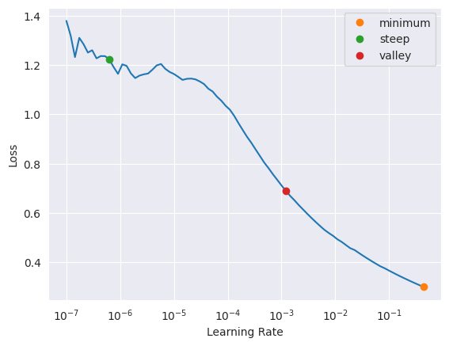
learn.fine_tune(
20,
base_lr=1e-3,
freeze_epochs=5, # train the head
cbs=[
EarlyStoppingCallback(monitor='valid_loss', patience=3),
SaveModelCallback(monitor='valid_loss') # saves best model
]
)| epoch | train_loss | valid_loss | accuracy | time |
|---|---|---|---|---|
| 0 | 1.027827 | 0.761079 | 0.585366 | 00:24 |
| 1 | 0.634203 | 0.074252 | 0.980488 | 00:23 |
| 2 | 0.415216 | 0.089031 | 0.985366 | 00:24 |
| 3 | 0.295387 | 0.111100 | 0.980488 | 00:23 |
| 4 | 0.225855 | 0.114145 | 0.990244 | 00:24 |
Better model found at epoch 0 with valid_loss value: 0.7610787749290466.
Better model found at epoch 1 with valid_loss value: 0.07425229251384735.
No improvement since epoch 1: early stopping| epoch | train_loss | valid_loss | accuracy | time |
|---|---|---|---|---|
| 0 | 0.042249 | 0.067354 | 0.990244 | 00:23 |
| 1 | 0.030849 | 0.069564 | 0.990244 | 00:24 |
| 2 | 0.026555 | 0.074522 | 0.990244 | 00:26 |
| 3 | 0.019717 | 0.079238 | 0.990244 | 00:26 |
Better model found at epoch 0 with valid_loss value: 0.06735362857580185.
No improvement since epoch 0: early stoppingThe bigger model lead to 99% accuracy. This certainly is promising. On the other hand, we only have a few different formats in the training set. To guard against out of domain errors we will stick to the resnet18.
set_seed(42, reproducible=True)
pages = DataBlock(
blocks=(ImageBlock, CategoryBlock),
get_items=get_image_files,
splitter=format_splitter,
get_y=parent_label,
get_x=correct_exif_orientation,
item_tfms=[RandomResizedCrop(320, min_scale=0.3)]
)
dls = pages.dataloaders("data/raw/")
learn.lr_find(suggest_funcs=(minimum, steep, valley))
learn = vision_learner(dls, resnet18, metrics=accuracy)
learn.fine_tune(
20,
base_lr=1.4e-3,
freeze_epochs=5, # train the head
cbs=[
EarlyStoppingCallback(monitor='valid_loss', patience=3),
SaveModelCallback(monitor='valid_loss') # saves best model
]
)| epoch | train_loss | valid_loss | accuracy | time |
|---|---|---|---|---|
| 0 | 1.059075 | 0.661225 | 0.721951 | 00:24 |
| 1 | 0.592713 | 0.315692 | 0.912195 | 00:23 |
| 2 | 0.383400 | 0.343516 | 0.926829 | 00:24 |
| 3 | 0.274423 | 0.343230 | 0.941463 | 00:23 |
| 4 | 0.203259 | 0.317037 | 0.941463 | 00:22 |
Better model found at epoch 0 with valid_loss value: 0.6612254977226257.
Better model found at epoch 1 with valid_loss value: 0.31569164991378784.
No improvement since epoch 1: early stopping| epoch | train_loss | valid_loss | accuracy | time |
|---|---|---|---|---|
| 0 | 0.054644 | 0.231042 | 0.926829 | 00:23 |
| 1 | 0.039082 | 0.173815 | 0.941463 | 00:23 |
| 2 | 0.026822 | 0.126490 | 0.956098 | 00:24 |
| 3 | 0.018999 | 0.112197 | 0.970732 | 00:24 |
| 4 | 0.014812 | 0.110572 | 0.970732 | 00:23 |
| 5 | 0.012533 | 0.140026 | 0.960976 | 00:25 |
| 6 | 0.009940 | 0.154067 | 0.956098 | 00:24 |
| 7 | 0.008640 | 0.139433 | 0.965854 | 00:26 |
Better model found at epoch 0 with valid_loss value: 0.2310423105955124.
Better model found at epoch 1 with valid_loss value: 0.17381496727466583.
Better model found at epoch 2 with valid_loss value: 0.12649033963680267.
Better model found at epoch 3 with valid_loss value: 0.11219745874404907.
Better model found at epoch 4 with valid_loss value: 0.11057160794734955.
No improvement since epoch 4: early stopping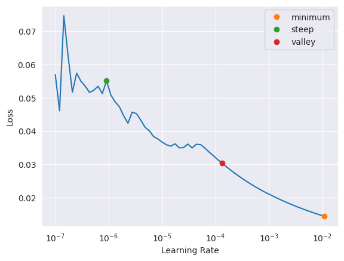
interp = ClassificationInterpretation.from_learner(learn)interp.plot_top_losses(10)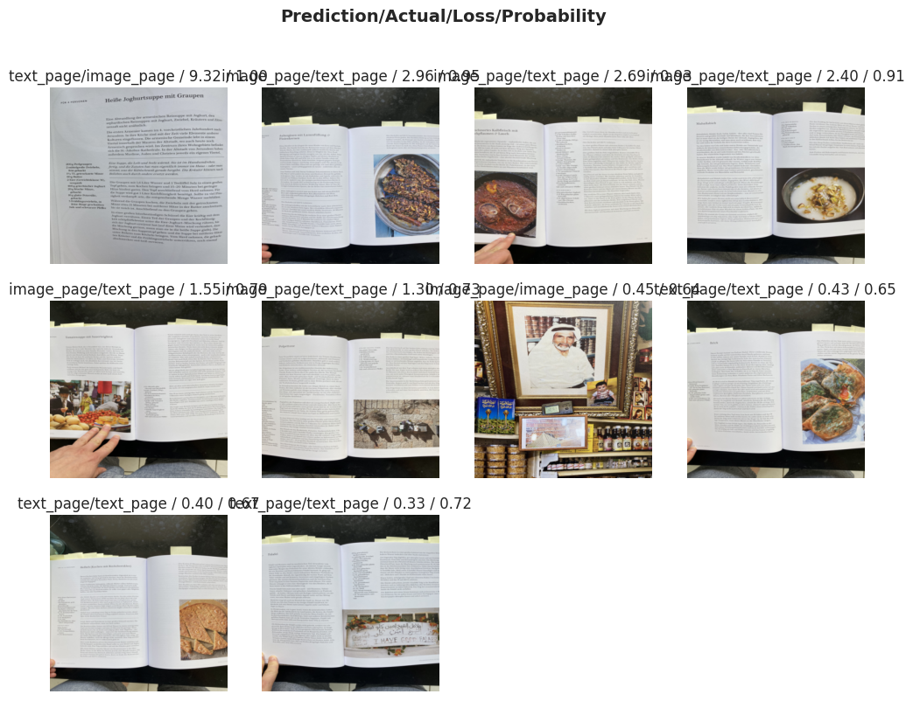
Our goal is a pure pytorch inference. To avoid any preproccessing mistakes, we will start with fastai pipeline.
learn.export("data/models/page_classifier.pkl")learn_inf = load_learner("data/models/page_classifier.pkl");pred_class, pred_idx, probs = learn_inf.predict("pictures/inf_1.jpg")
print(f"Prediction: {pred_class}")
print(f"Probabilities: {probs}")Prediction: image_page
Probabilities: tensor([0.7906, 0.2094])pred_class, pred_idx, probs = learn.predict("pictures/inf_2.jpg")
print(f"Prediction: {pred_class}")
print(f"Probabilities: {probs}")Prediction: text_page
Probabilities: tensor([0.0087, 0.9913])The result for the second image is correct, whereas for the first it is wrong. Again from the text with big image type.
When we look at the pictures, we see that the text page picture has an image with text. It could be that the CNN learned these patterns and interpreted the image as text.
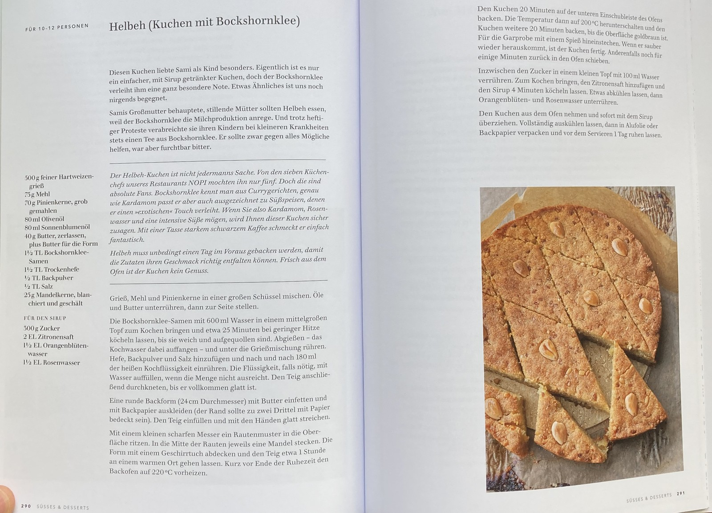
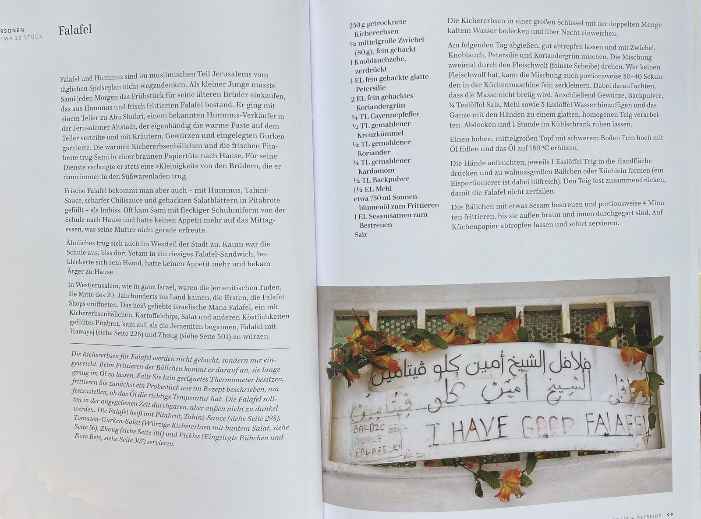
To use model in pytorch only we need to convert it to torchscript.
model = learn_inf.model
model.eval()
example_input = torch.randn(1, 3, 320, 320) # batch, channels, H, W
traced = torch.jit.trace(model, example_input)
traced.save("data/models/page_classifier.pt")We will later use the following code in the app
import torch
model = torch.jit.load("data/models/page_classifier.pt")
model.eval();from torchvision import transforms
tfm = transforms.Compose([
transforms.Resize(320, interpolation=transforms.InterpolationMode.BILINEAR),
transforms.CenterCrop(320),
transforms.ToTensor(),
transforms.Normalize(mean=[0.485, 0.456, 0.406],
std=[0.229, 0.224, 0.225])
])
labels = ["image_page", "text_page"]
def predict_image(path):
img = Image.open(path).convert("RGB")
x = tfm(img).unsqueeze(0) # add batch dim
with torch.no_grad():
out = model(x)
probs = torch.softmax(out, dim=1)[0]
pred_idx = probs.argmax().item()
return labels[pred_idx], probs.tolist()predict_image("pictures/inf_1.jpg")('image_page', [0.8300915360450745, 0.16990840435028076])%%time
predict_image("pictures/inf_2.jpg")CPU times: user 315 ms, sys: 22.1 ms, total: 337 ms
Wall time: 163 ms('text_page', [0.030374446883797646, 0.9696255922317505])The results are very similar 83% vs 80% for the wrong classification. We will accept the small deviations from fast.ai for now.
We have 160ms runtime for one image at 97.5% accuracy to detect if it is an image. This score could increase if we increase the dataset size and add more layouts.
A completely different approach could also work. In the next notebook, I will be working with YOLO-doclayout. a fast detector that detects the occurrence of text or image blocks on a page. If there are no text boxes, then there is no text.
Like this post? Get espresso-shot tips and slow-pour insights straight to your inbox.
Join the discussion below.